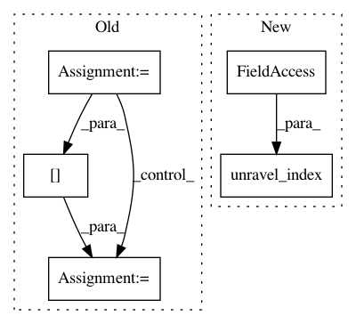

6ecfe53d12d3f577412336f219e6059fddc10b8b,nilearn/input_data/nifti_spheres_masker.py,,_signals_from_seeds,#Any#Any#Any#,22
Before Change
// Compute square distance to the seed
dist = ((coords - seed[:, None, None, None]) ** 2).sum(axis=0)
if radius is None or radius ** 2 < np.min(dist):
signal[:, i] = signals[np.argmin(dist)]
else:
mask = (dist <= radius ** 2)
signals[:, i] = np.mean(signals[mask], axis=0)
return signals
After Change
dist = ((coords - seed[:, None, None, None]) ** 2).sum(axis=0)
if radius is None or radius ** 2 < np.min(dist):
signals[:, i] = niimg.get_data()[
np.unravel_index(np.argmin(dist), dist.shape)]
else:
mask = (dist <= radius ** 2)
signals[:, i] = np.mean(niimg.get_data()[mask], axis=0)
In pattern: SUPERPATTERN
Frequency: 3
Non-data size: 5
Instances
Project Name: nilearn/nilearn
Commit Name: 6ecfe53d12d3f577412336f219e6059fddc10b8b
Time: 2015-05-07
Author: abraham.alexandre@gmail.com
File Name: nilearn/input_data/nifti_spheres_masker.py
Class Name:
Method Name: _signals_from_seeds
Project Name: biocore/scikit-bio
Commit Name: c6a0d9f127ba7cac43e2bc3ab09549712ecc08f6
Time: 2014-06-23
Author: gregcaporaso@gmail.com
File Name: skbio/core/alignment/pairwise.py
Class Name:
Method Name: local_pairwise_align
Project Name: nilearn/nilearn
Commit Name: 5bbc59dcbab7aac152224ff710ec3fa22bd2ea27
Time: 2015-05-13
Author: abraham.alexandre@gmail.com
File Name: nilearn/input_data/nifti_spheres_masker.py
Class Name:
Method Name: _signals_from_seeds